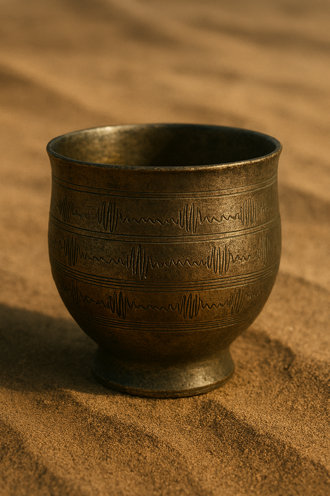
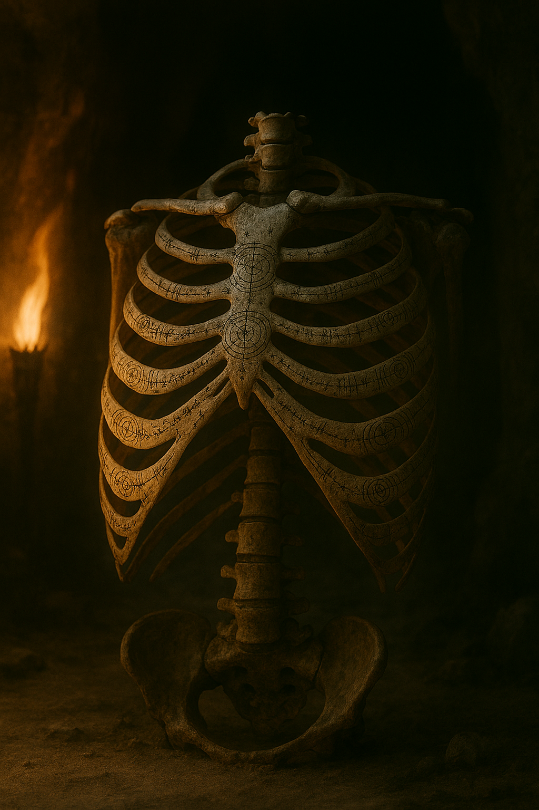

Artifacts (Archaeology)

Cradle Stone of Elgaia
A luminescent slab etched with lullabies in bio-rhythmic script from the vanished Elgaian civilization.

Nomad’s Echo Cup
A ceremonial drinking vessel capturing vocal wave imprints when used in festive rites.
Remains (Anthropology)

Tattooed Ribcage of the Skyborn
Engraved with celestial charts, discovered in a desert cavern.

Whisper Skull
Emits faint tones under moonlight—perhaps a memory-vault of ancient chants.
Histories (Interpretations)
Interpretations generated by our Cultural Historians will appear here. Check back soon for narrated mythologies woven from the artifacts and remains above.